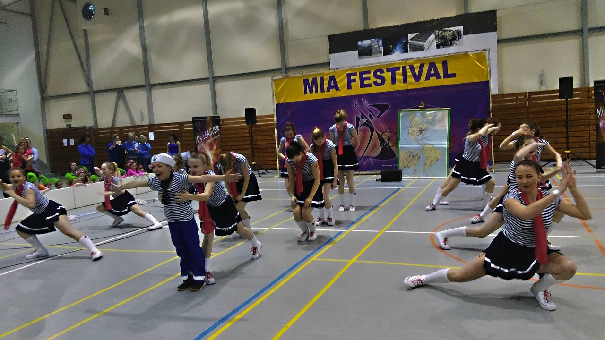
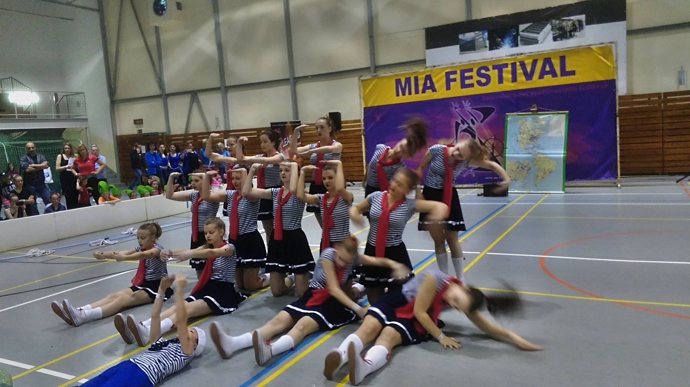
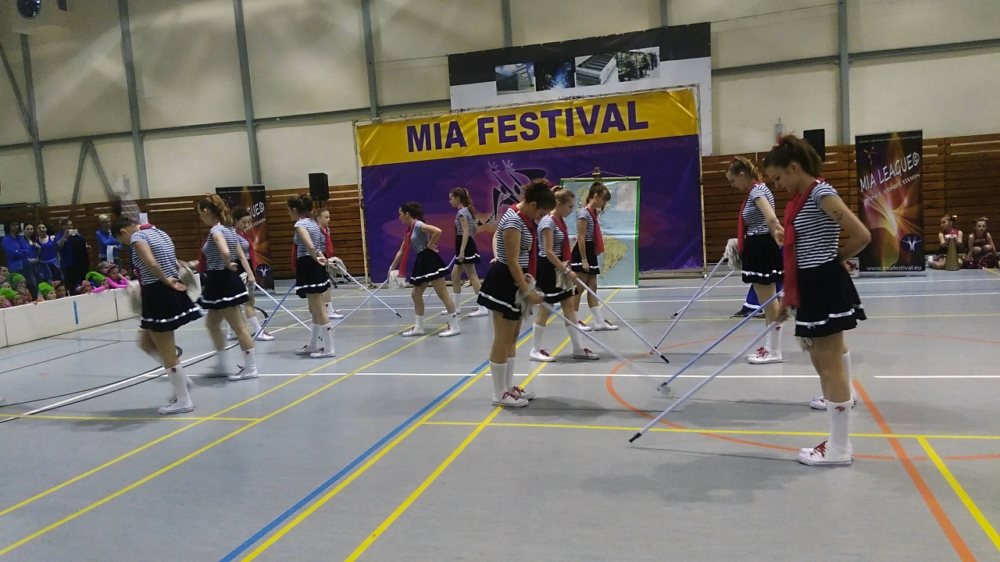
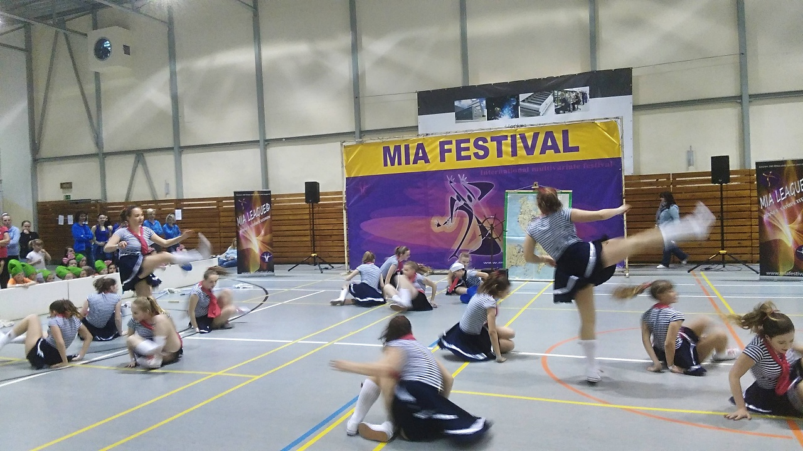
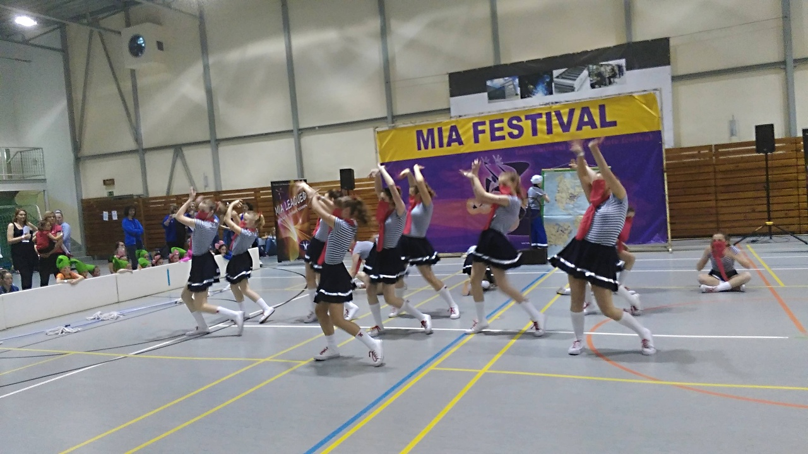

VFRESH DC
Nová sezóna 2026/27, nábor právě probíhá. Dvě cesty podle chuti: rekreační tanec pro radost a partu, nebo soutěžní STREET DANCE CREW s přípravou na závody. Vyberte si podle věku.
Rozvrh
- Taneční školička FRESHÍK3–4 roky · St 16:00–17:00 · zkušební 9. 9. a 23. 9.
- VFresh Mini Beat5–8 let (předškolní) · Út 16:30–17:30 · zkušební 8. 9. a 22. 9.
- DVK Street Dance Crew (soutěžní)8–12 let · Út 15:00–16:30 + Čt 16:30–18:00 · zkušební 10. 9. a 17. 9., 16:30–18:00
- JVK Street Dance Crew (soutěžní)12–15 let · St 17:00–18:30 + Pá 15:00–16:30 · zkušební 23. 9., 17:00–18:30
- A Fresh Crew (HVK, JVK pokročilí)14–20 let · Út 17:30–19:00 + Čt 18:00–19:30 · zkušební 22. 9., 17:30–19:00 (nutná taneční zkušenost)
- Rekreační STREET DANCE děti7–14 let · Út 15:30–17:00 · ZŠ Helsinská (Sídliště nad Lužnicí)
- Viktoria Fresh Matesdospělí 25+, rodičovská crew · St 18:30–20:00, od října
Soutěžní crew (DVK/JVK/A) mají navíc 1 h sportovní gymnastiky týdně, termín upřesní trenéři.
Kde trénujeme
📍 Taneční centrum VFRESH DC
Centrum Univerzita Tábor (CUT), Vančurova 2904, 390 01 Tábor
přízemí, bývalý prostor Party Room
📍 Rekreační STREET děti
ZŠ Helsinská, Sídliště nad Lužnicí, Tábor
Nestihneš žádný z termínů? Domluv si svoji 1 lekci zdarma do konce září.
Nový sál se zrcadly, dětská herna Safari a restaurace přímo v budově. Už žádné čekání na chodbě.
Odstartuj svou taneční cestu
Hledáš místo, kde můžeš být sám sebou, makat na sobě a patřit do komunity, která tě podrží? VFRESH DC otevírá brány a spouští nábor do všech tanečních CREW pro děti i dospělé od 3 let! Žijeme streetovou kulturou a předáme ti to nejlepší z ní.
Tancujeme
- Hip Hopflow, groove a tvůj vlastní styl
- House Dancerychlá práce nohou a klubová energie
- Dancehallkaribský vibe, rytmus a sebevědomí
- Lockingfunk, energie a čistá radost z pohybu
…a spoustu dalších stylů napříč celou STREET scénou.
Proč zrovna VFRESH DC?
- Rosteme společněna sále i mimo něj, inspirujeme se navzájem
- Tvoříme bez limitůobjevujeme nové styly a hledáme tvou jedinečnost
- Prožíváme to naplnoradost z úspěchů i sílu zvednout se, když se nedaří
- Pojí nás stejná krevláska k tanci, respekt a přátelství, které vydrží
🔥 Tvoje crew. Tvoje cesta. Tvůj vibe. Tvůj domov. 🔥
Benefity pro tanečníky VFRESH DC
Vítej v komunitě VFRESH DC & Viktoria z.s.
Slevy
- Sourozenecká sleva20 %
- Sleva na druhý kurz20 %
- Věrnostní sleva5 %
- Zvýhodněná cena workshopůpro členy crew
Navíc
- Doprava na soutěžepříspěvek na autobus se spoluúčastí klubu
- Herna Safari a restauracesleva na vstupné, káva pro rodiče
- Příspěvek Jihočeského kraje„Pomáháme s kroužky pro jihočeské děti" (od září)
Fotky a videa




